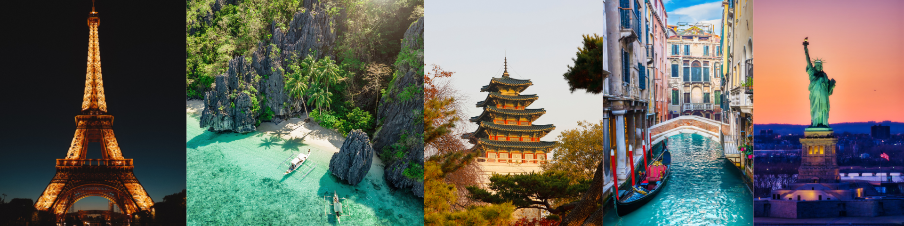

The images and videos that will be shown in the next part of the website are my dream destinations or places that I want to go to. I decided to use this as my topic to even more appreciate the scenery. This also helps me admire the beauty of nature.


Palawan's beauty has always been top-tier, and for me, it is one of the best places to go here in the Philippines. It is well-known for its white sand beaches and islands, as well as its clear blue water, and as a nature lover, this makes me want to live near such beauty. This place is too good to be true, especially since it is part of the Philippine waters. I also want to go here because it just feels like you're in a magical world with a lot to offer.

As a former K-drama and K-pop fan, I've always admired the culture of this country. Everything in this country is highly progressive, and the convenience store there is just my favorite because of the yummy food it sells. Another thing is its climate and the view of this country, because it looks so surreal. I can't really express more about South Korea, but this country is special to me, and I think a great way to go there is to start with Seoul, the capital city!

A great example of a picturesque city that has a great story to tell is Venice in Italy. It has one of the most unique environments because it's a city built on water. This city's architecture is so beautiful that you want to photograph almost everything. There are also some spectacular bridges here, and I want to experience a tour ride in this charming place.